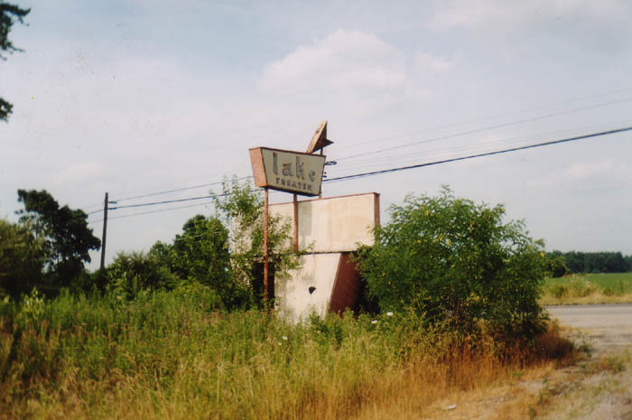
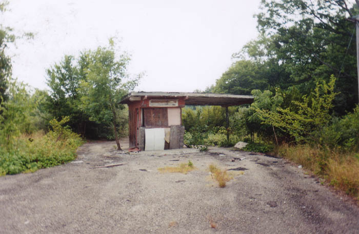
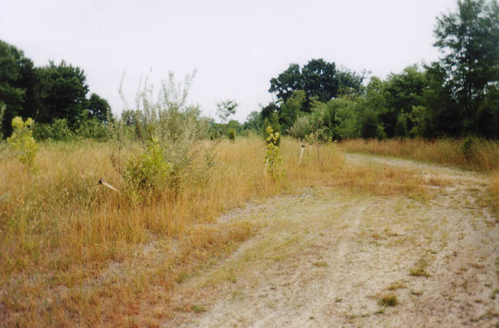
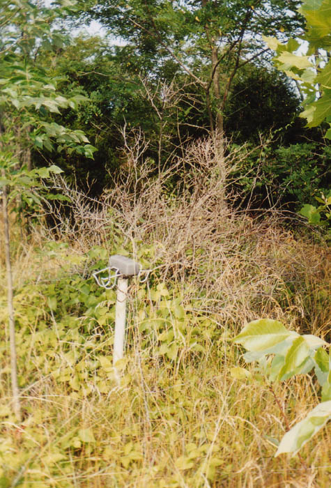
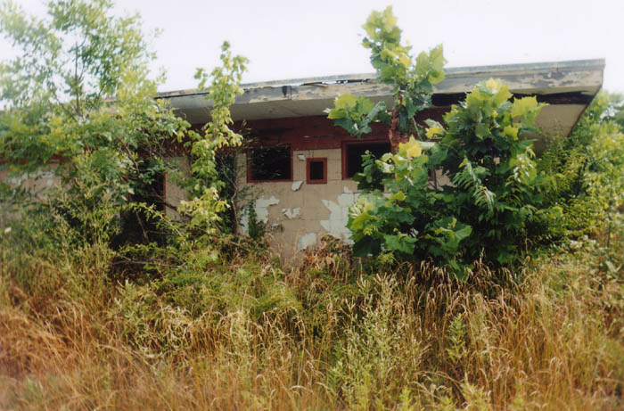
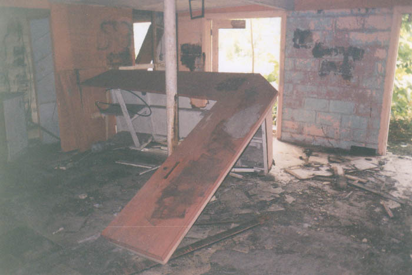
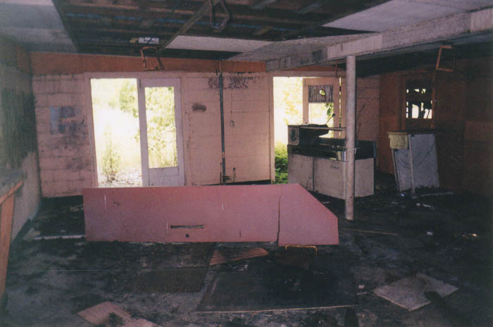
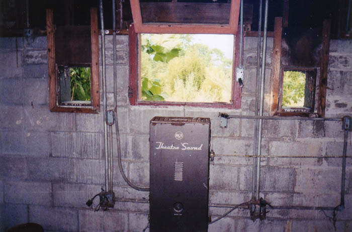
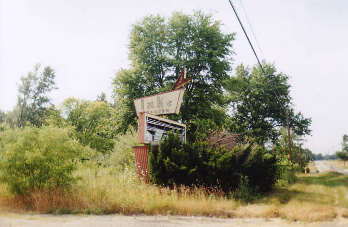

Abandoned drive-in movie theaters are a pretty common sight on America's highways and side roads. Brown County's Lake Drive-In is the third one I profiled for the website, after the Heath and Show Boat Theaters.

The sign is the first thing you see when you come across this forgotten southern Ohio ozoner. It stands out on Route 68 near Mt. Orab. Just past the sign is the ticket booth, which is boarded up somewhat. Inside there's nothing but a little room where the ticket guy/girl used to work.

Following the gravel road past the ticket booth you enter the main area where people used to park and watch movies and conceive baby boomers. It's overgrown to a ridiculous degree, with six-foot weeds and full-grown trees. The theater probably hasn't shown a movie since Burt Lancaster was a big star.

There's no screen at the Lake Drive-In; at some point it either fell down or was taken out. It's been my experience that screens are pretty rare at abandoned drive-ins--time and weather usually wreak havoc on their flat, precariously balanced shapes. What it does have is the concession stand, which stands at the rear of the parking area. Rumor has it that a tornado took the Lake Drive-In out during a rerelease of Gone With the Wind. It's a funny story, but according to someone who was in southern Ohio in those days, it's not precisely true. It turns out that the screen was blown down during a particularly bad storm; there were funnel clouds in the area, but no tornado that night. Once the damage had been assessed and the Lake had been shut down, they posted GONE WITH THE WIND on the marquee, and a picture of it ran in the local paper. (I'd love to get a scan of this, if anybody has it.) So that's how the tornado legend got its start.

Inside, the concession stand looks roughly like it must have when things were better for the drive-in; the counter is there, broken and on the floor, and much of the equipment is lying around in pieces. Lots of bees in the summer, too.


On the outside of the concession stand are both restrooms and the projection booth, which is at the front of the building at ground level. The sound box was still on the wall with its guts stripped out.

If you'd like to see the Lake Drive-In, go south on Route 68 from Mt. Orab and watch the right side of the road. The driveway runs right beside somebody's house, though, so be careful.

Ohio's Forgotten Drive-Ins
40 East Twin Drive-In
The Heath Drive-In
Hocking Theater Drive-In
Kingman Drive-In Theater
The Lake Drive-In
The Leatherwood Drive-In
The Linden Air Drive-In
The Show Boat Drive-In
The Skyline Drive-In

Back